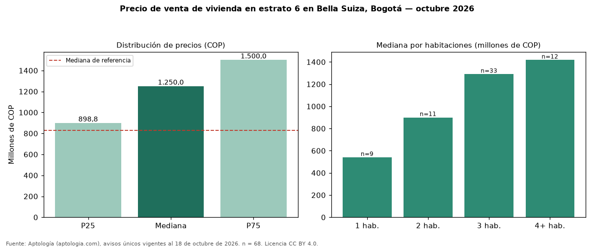

Precio de venta de vivienda en estrato 6 en Bella Suiza, Bogotá — octubre 2026
Con 68 avisos únicos, el precio mediano de vivienda en estrato 6 en venta en Bella Suiza, Bogotá es COP 1,25 mil millones. Eso es 51 % más que la mediana de toda la oferta de venta en Bella Suiza (COP 830 millones). Por metro cuadrado, la mediana es COP 8.503.401/m² (+9 % frente a COP 7.795.186/m²). Por habitaciones: 1 habitación, COP 540 millones (n = 9); 2 habitaciones, COP 900 millones (n = 11); 3 habitaciones, COP 1,29 mil millones (n = 33); 4 o más habitaciones, COP 1,42 mil millones (n = 12). El área mediana es 151 m² (referencia: 113 m²). El 97 % de los avisos tiene al menos un parqueadero. El rango intercuartílico va de COP 899 millones a COP 1,50 mil millones (razón 1,7). Datos abiertos CC BY 4.0 de Aptología; fuente y búsqueda de inmuebles: https://www.aptologia.com/estrato-de/bogota/bella-suiza. Archivos: PDF de 2 páginas, CSV con las cifras y gráfica PNG.

| Avisos únicos | 68 |
|---|---|
| Percentil 25 | COP 898.750.000 |
| Mediana | COP 1.250.000.000 |
| Percentil 75 | COP 1.500.000.000 |
| Mediana por m² | COP 8.503.401 |
Fuente: avisos vigentes de portales inmobiliarios recopilados por Aptología, deduplicados (mínimo 30 avisos únicos por celda). Precios pedidos, no cerrados. Fecha: 2026-10-18.